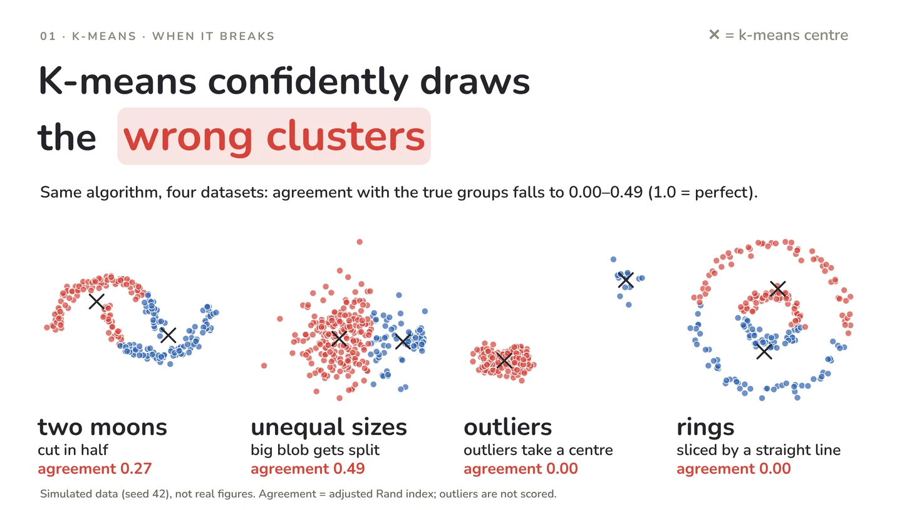
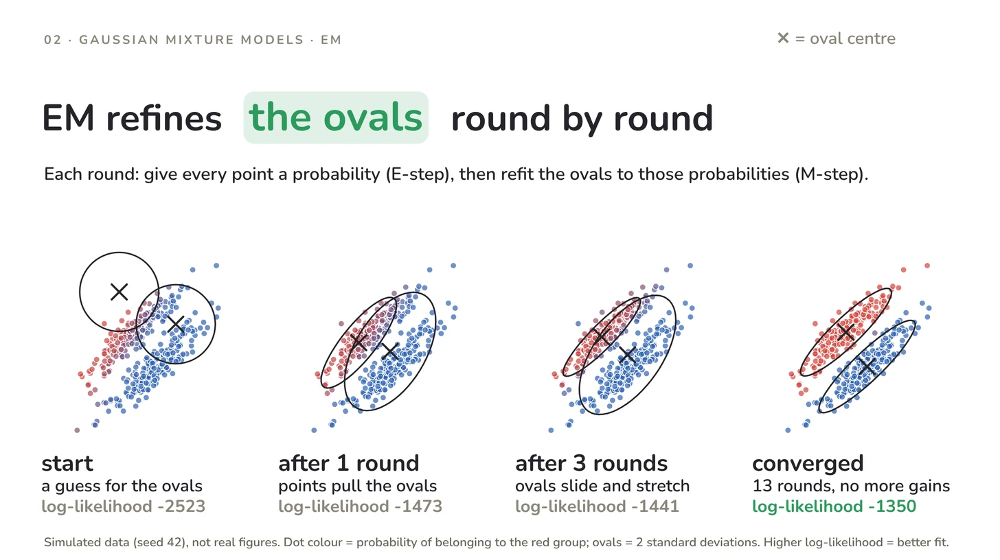
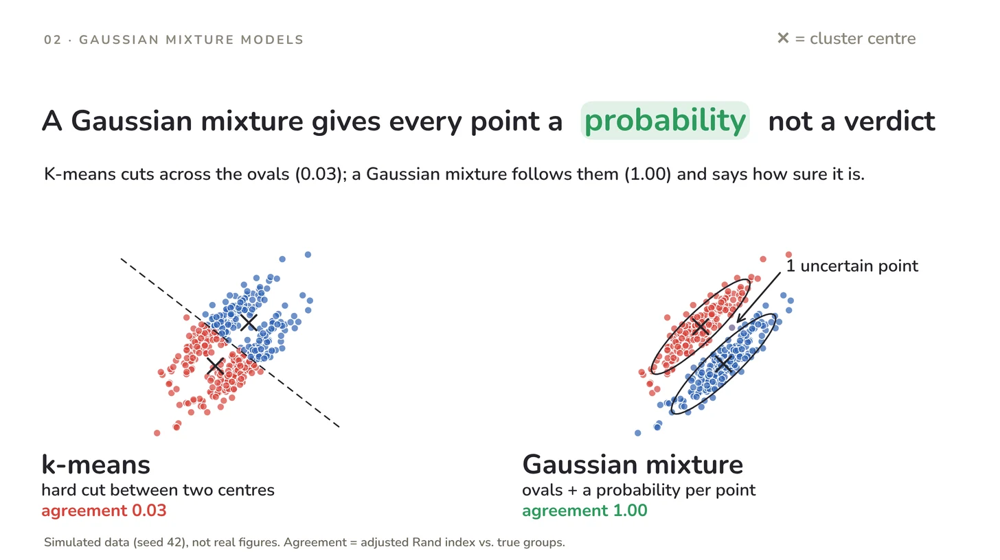
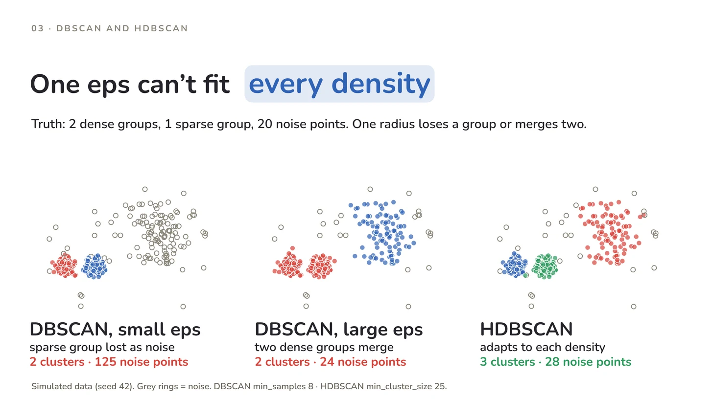
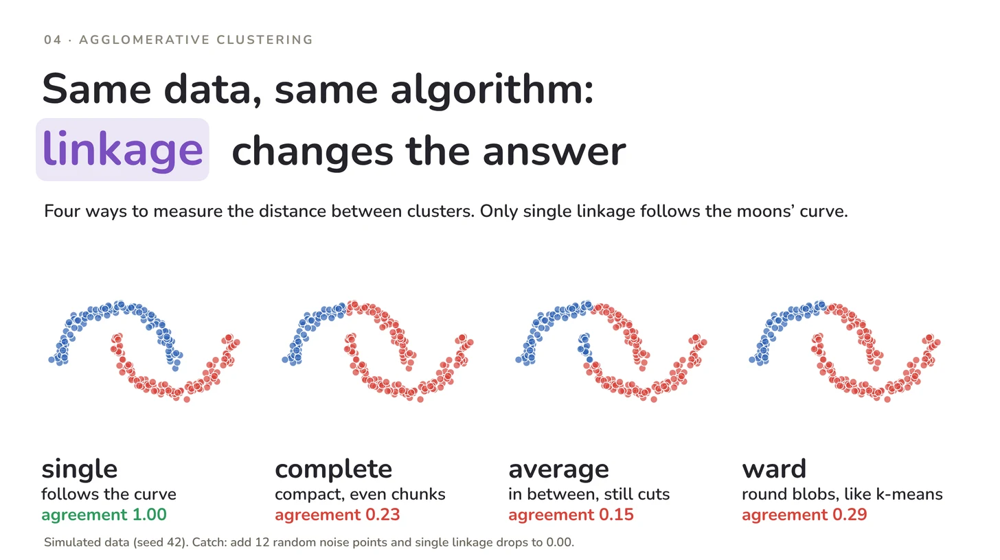
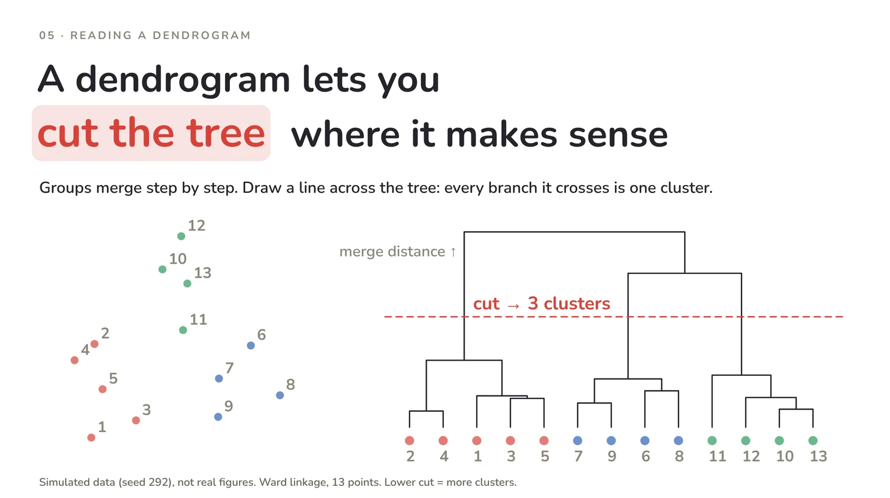

Unsupervised learning
When K-Means Fails: GMM, DBSCAN, HDBSCAN and Agglomerative Clustering Explained
Introduction
K-Means always finds clusters, even when the data doesn't naturally contain them. Give it two crescent moons, two rings, or a dataset with a few extreme outliers, and it will still divide the observations into neat-looking groups. The problem? Those groups might have very little to do with the actual structure of the data.
Why does this happen? K-Means is built around specific assumptions about how clusters are shaped and distributed. When those assumptions don't hold, the results can be misleading.
Fortunately, K-Means isn't the only option.
In this article, we'll explore four alternative clustering algorithms — Gaussian Mixture Models (GMM), DBSCAN, HDBSCAN, and Agglomerative Clustering — understand how they work, and, more importantly, when to use each of them.
Running example
Throughout the article, we'll use a customer segmentation scenario from an online shop. Imagine grouping customers based on two features: orders per year and average basket value. All visualizations use simulated data to illustrate how different algorithms approach the same clustering problem.
In this article
Why K-Means Can Fail: Four Hidden Assumptions
Quick refresher: how k-means works
K-means picks k centres, assigns every point to its nearest centre, moves each centre to the mean of its points, and repeats until nothing changes.
In the shop example, each centre is a typical customer profile, and every customer joins the closest profile.
K-means assumes four things about your data. When your data breaks one of them, it fails without any warning:
- Clusters are round blobs. The border between two clusters is always a straight line, and a crescent or a ring can’t be separated by one.
- Clusters have similar size and spread. The border sits halfway between two centres, so a big, spread-out group next to a small, tight one gets cut in the wrong place.
- Every point belongs to a cluster. There is no noise label, and a centre is an average. Three customers who each spend 50 times the average can pull a centre away from the real group.
- You choose k first. The elbow curve and the silhouette score help, but they can’t tell you that the shape is the real problem.
Each dataset below breaks one assumption and has two true groups. K-means (k = 2) runs on all four:

What went wrong in each panel
- Two moons: cut in half by a straight line (agreement 0.27).
- Unequal sizes: the big group is split, and part of it joins the small one (agreement 0.49).
- Outliers: 14 far-away points take one centre for themselves, so the two real groups merge into one (agreement 0.00).
- Rings: sliced by a straight line instead of separated into inner and outer ring (agreement 0.00).
How to read “agreement”
- What it is: the adjusted Rand index, which compares the k-means labels with the true groups.
- How to read it: 1.0 means a perfect match, and a value near 0 means no better than random. Outlier points are left out of the score.
- The catch: you can only compute it when you know the true groups, as with simulated data. On real data you usually don’t, which is exactly why a wrong clustering is so easy to miss.
Silent failure
None of these four runs raised an error or a warning.
Gaussian Mixture Models: Clusters With Shape and Probabilities
A Gaussian Mixture Model (GMM) represents clusters as overlapping probability distributions. Instead of assigning each data point to exactly one cluster, it estimates the probability of belonging to each cluster.
The idea: a party
Imagine someone standing between the music corner and the food table. They're clearly enjoying both. Perhaps there's a 70% chance they'd belong to one group and a 30% chance they'd belong to the other.
K-Means forces a single assignment. A GMM can capture both possibilities.
In our online shop example, a customer who frequently places small orders might have an 85% probability of belonging to the "frequent small-basket buyers" cluster and a 15% probability of belonging to the "bulk buyers" cluster.
Rather than forcing a definite label, GMM preserves this uncertainty.
How it works
- Each cluster is represented by a Gaussian distribution. It has its own centre (mean), shape and orientation (covariance), and weight within the overall mixture.
- The model estimates all distributions together. It learns where the clusters are, how spread out they are, and how much each contributes to the overall data distribution.
- Each data point receives probabilities for all clusters. These probabilities, also called responsibilities, indicate how likely the observation is to belong to each Gaussian component.
This is called soft clustering, in contrast to the hard cluster assignments produced by K-Means.
How GMM learns: the EM algorithm
The chicken-and-egg problem. To describe each cluster, we need to know which customers belong to it. To know which customers belong to which cluster, we need to describe the clusters. GMM solves this with the Expectation-Maximization (EM) algorithm, which alternates between the two questions.
- Step 1: Start with a guess. Place the Gaussian components at starting positions.
- Step 2: Expectation (E-step). For every customer, calculate the probability of belonging to each component (the responsibilities).
- Step 3: Maximization (M-step). Update each component’s centre, shape and weight, giving more influence to the customers who most likely belong to it.
- Step 4: Repeat Steps 2 and 3 until the fit stops improving.

The responsibilities calculated in the E-step are the 85% and 15% from the shop example. In the M-step, each component’s centre, shape and weight are recalculated as usual, except that each customer counts in proportion to its responsibility. A customer with 0.85 for component 1 pulls its mean and shape 85% as much as a full member would.
This is the soft version of what K-Means does: K-Means assigns each customer to one centroid and then moves the centroid, while EM assigns probabilities and then updates the whole distribution. Like K-Means, EM can end in a local optimum, so it is usually run from several starting points.
What it fixes, and where it still fails
- Fixed: clusters can be stretched and tilted, and clusters can overlap.
- Still open: you choose the number of components up front.
- Still open: every cluster is assumed to be bell-shaped, so crescents and rings remain a problem.
In the picture
Two stretched, diagonal groups lie side by side. Dot colour shows the probability of belonging to each group.

- K-means: the dashed border cuts straight across both ovals (agreement 0.03).
- GMM: an oval around each group follows them (agreement 1.00).
- Uncertain point: one point sits so close to the border that the model doesn’t commit above 90%.
DBSCAN and HDBSCAN: Finding Clusters as Dense Regions
DBSCAN takes a different approach to clustering. Instead of looking for cluster centres, it looks for areas where data points are packed closely together. Dense regions become clusters, while isolated points can be classified as noise.
Unlike K-Means, DBSCAN can discover clusters of different shapes without requiring the number of clusters in advance.
The idea: a city at night
Imagine looking at a city from above at night. Some areas are brightly lit and full of activity, while others are dark and quiet.
The brightly lit areas represent clusters. Someone standing alone, far away from the crowds, isn't necessarily part of any group. They're just a passerby.
In our online shop example, dense regions might represent groups of customers with similar purchasing behaviour. Meanwhile, a handful of unusual buyers who don't fit into any dense region may be classified as noise.
DBSCAN assigns these observations the label -1, rather than forcing them into an existing cluster.
The two settings
DBSCAN relies on two parameters:
- eps: The maximum distance between two points for them to be considered neighbours.
- min_samples: The minimum number of points required within a point's
epsneighbourhood for it to qualify as a core point. The point itself is included.
Together, these parameters determine how dense a region must be before DBSCAN considers it a cluster.
Three roles for every point
DBSCAN classifies observations into three categories:
- Core point: Has at least
min_samplespoints, including itself, within itsepsneighbourhood. - Border point: Has fewer than
min_samplespoints in its own neighbourhood but lies within theepsneighbourhood of a core point. - Noise point: Neither a core point nor reachable from any core point.
Core points form the dense structure of a cluster, border points extend its boundaries, and noise points remain unassigned.
What it fixes, and the catch
- Fixed: you don’t choose k.
- Fixed: clusters can take any shape.
- Fixed: outliers are flagged instead of dragging a centre.
- The catch: eps is a single radius for the whole dataset. A dense group needs a small eps, a sparse group needs a large one, and no single value suits both.
In the picture
The data has two dense groups, one sparse group and 20 random noise points. Three runs on the same data:

What each run found
- Small eps: the sparse group dissolves into noise. 2 clusters, 125 noise points.
- Large eps: the sparse group survives, but the two neighbouring dense groups melt into one. 2 clusters, 24 noise points.
- HDBSCAN: all 3 groups found, 28 noise points, close to the 20 true noise points.
HDBSCAN: one radius per group
- The idea: instead of one radius, HDBSCAN looks at clusters across many radii and keeps the ones that stay stable, so each group effectively gets its own radius.
- The main setting: min_cluster_size, the smallest group you are willing to call a cluster (25 in this example).
Try it yourself
Move eps and min_samples and watch groups appear, merge or turn into noise. With min_samples = 8, none of the radii I tried (0.12 to 1.0) recovered all three groups.
Agglomerative Clustering: Building a Tree of Merges
Agglomerative clustering builds a family tree: it starts with every point alone and keeps merging the two closest groups. You can cut the tree at any level instead of choosing k up front.
The idea: a family tree
- Start: every customer is their own group.
- Merge: the two most similar customers pair up, similar pairs merge into small segments, and segments keep merging.
- End: one group holds every customer.
The whole history of merges is kept, so you can look at the structure first and decide afterwards how many segments make sense.
Linkage: what does “closest” mean?
When each group has many points, one choice decides how the tree looks: how to measure the distance between two groups. That is the linkage method.
| Linkage | Distance between two clusters | Tends to produce |
|---|---|---|
| Single | Closest pair of points | Long, curved chains; sensitive to noise |
| Complete | Farthest pair of points | Compact clusters of similar width |
| Average | Average over all pairs of points | A compromise between single and complete |
| Ward | The merge that raises the variance the least | Round, even clusters, similar to k-means |
In the picture: the linkage changes the answer
All four runs use the same moon-shaped data and ask for 2 clusters:

- Single linkage: follows the curve of the moons (agreement 1.00).
- Complete (0.23), average (0.15) and Ward (0.29): all cut the moons into compact chunks.
The catch: noise breaks single linkage
- The test: I added 12 random noise points to the same data.
- The result: single linkage dropped to an agreement of 0.00. A few stray points were enough to bridge the gap between the moons, so almost everything ended up in one cluster.
- The lesson: the method that follows curves best is also the one that noise disturbs most.
Reading the dendrogram
The tree itself is called a dendrogram. In the picture below, the red line crosses 3 branches, so it gives 3 clusters.
- Leaf: one point.
- Joint: a merge. Its height shows how far apart the two merged groups were.
- Horizontal cut: every branch the line crosses is one cluster. A lower line gives more, smaller clusters; a higher line gives fewer, larger ones.
- Good sign: a long vertical stretch with no merges, like the gap around the red line, hints that the groups below it are really separate.

Two limits to keep in mind
- Size: it compares many pairs of points, so it gets slow and memory-hungry on large datasets.
- No undo: a merge can never be undone once it has happened.
Head-to-Head Comparison of All Five Methods
K-means is the fastest and simplest option but the least flexible; the other four give up some speed or simplicity in exchange for handling ovals, odd shapes, noise or a hierarchy.
| Method | What a cluster is | Number of clusters | Shapes it handles | Outliers and noise | Large datasets |
|---|---|---|---|---|---|
| K-means | A group around a centre | You choose k | Round blobs of similar size | No noise label; outliers pull centres | Very well |
| Gaussian Mixture | An oval with a probability per point | You choose the number of components | Ovals, including overlapping ones | No noise label | Well |
| DBSCAN | A dense region | Found automatically (set eps and min_samples) | Any shape, one density | Flagged as noise | Well |
| HDBSCAN | A dense region, at any density | Found automatically (set min_cluster_size) | Any shape, varying densities | Flagged as noise | Moderately |
| Agglomerative | A level of a merge tree | You choose k or the cut height | Depends on the linkage | Depends on the linkage; single linkage is sensitive | Poorly |
How to Choose a Clustering Method
Start from the shape of your data and what you need from the result, not from the algorithm.
Pick by situation
- Round, similar-sized groups and a large dataset: use k-means. It is still the right default, and it is easy to explain to stakeholders.
- Stretched or overlapping groups, or you want to know how sure the model is: use a Gaussian Mixture Model.
- Odd shapes, or you want outliers flagged as noise: use DBSCAN. If the groups differ a lot in density, use HDBSCAN.
- You want to see the structure first, or the dataset is small: use agglomerative clustering. Pick Ward for round groups and single linkage for curved chains, and watch out for noise.
- Not sure: try two or three methods and compare the results.
Three habits for every method
- Scale your features first. Most of these methods rely on distances. A feature measured in euros (hundreds) will drown out one measured in orders per year (single digits), and eps in DBSCAN means nothing until the features are on a comparable scale.
- Plot the result. Wrong clusters still look tidy. With two features, a scatter plot is enough; with more, project the data down to two dimensions first.
- Check more than one signal. The silhouette score helps when you have no true labels, but it tends to favour compact, round clusters, so it can rate a correct clustering of curved groups lower than a wrong round one. Always ask whether the segments make business sense too.
Other methods
Spectral Clustering, Mean Shift, OPTICS, BIRCH, K-Medoids and Affinity Propagation also exist. The five in this post cover the most common everyday cases.
Key Takeaway: Choose the Definition of a Cluster That Fits Your Data
Key takeaway
K-means, Gaussian Mixture Models, DBSCAN, HDBSCAN and agglomerative clustering are five different answers to the question “what is a cluster?”: a group around a centre, an oval with probabilities, a dense region, a dense region at any density, or a level in a tree. No method is the best one. The right one is the one whose definition matches your data. And because every method returns clusters whether or not they make sense, always plot the result and check it against what you know about the business.
Related posts
- K-Means Clustering How k-means works, how to choose k, and how to evaluate the result.